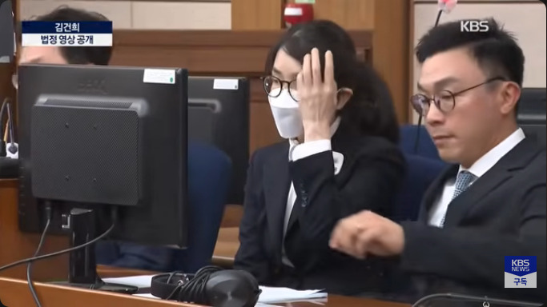
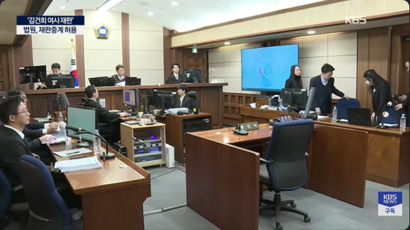
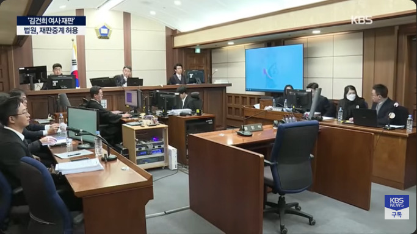
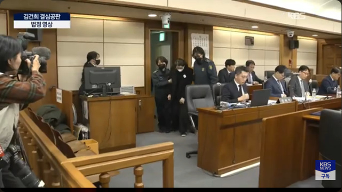
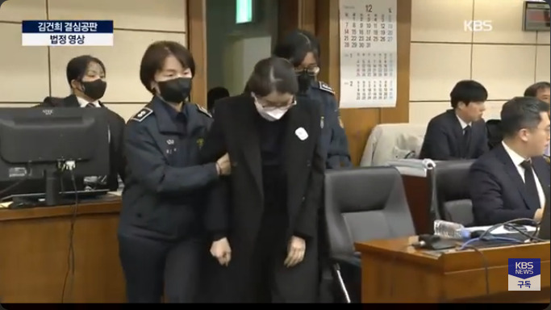
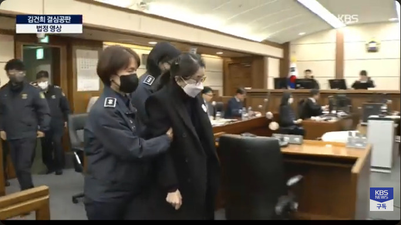
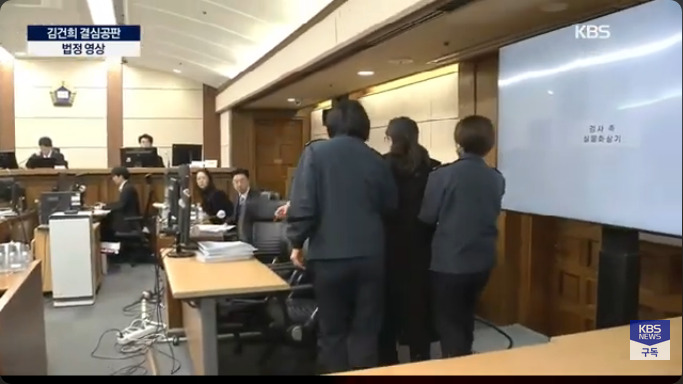
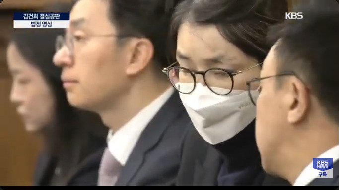
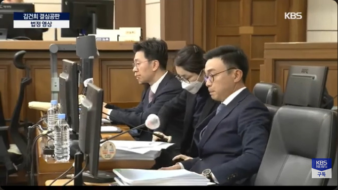

FACT CHECK (1. 一般原則)
READ THIS ARTICLE:
김건희 재판은 '중계 0번' 왜? 법정에도 '재판 CCTV' 달린다 [서초동M본부]
https://imnews.imbc.com/newszoomin/newsinsight/6768883_29123.htmlREAD THIS ARTICLE:
김건희 재판은 '중계 0번' 왜? 법정에도 '재판 CCTV' 달린다 [서초동M본부]
https://imnews.imbc.com/newszoomin/newsinsight/6768883_29123.html金建希の公判について公開されている映像はごく僅かですので、それらを脳裏に焼きつけておけばどのような報道をご覧になってもどの映像を再利用したかが分かるはずです。








